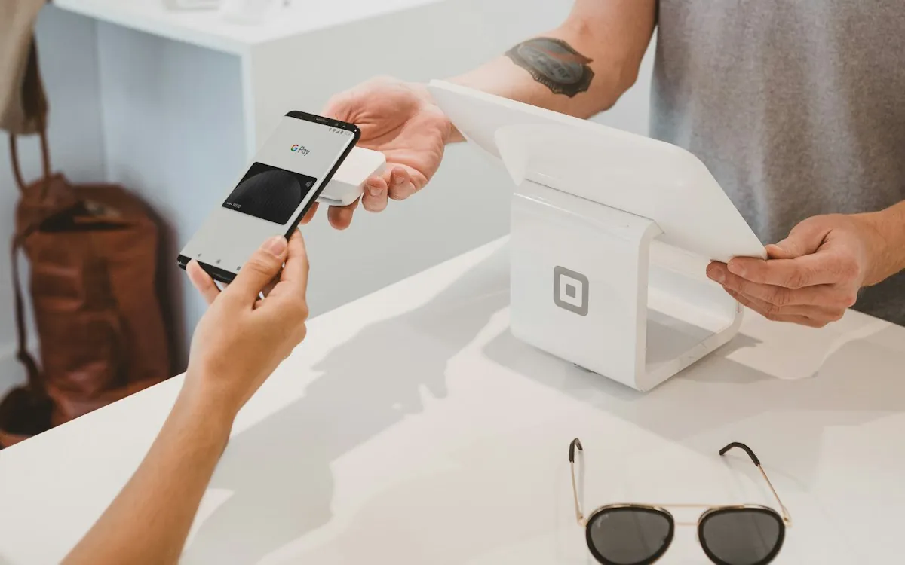
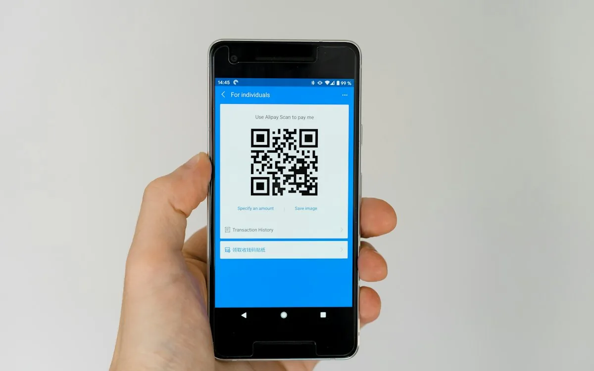
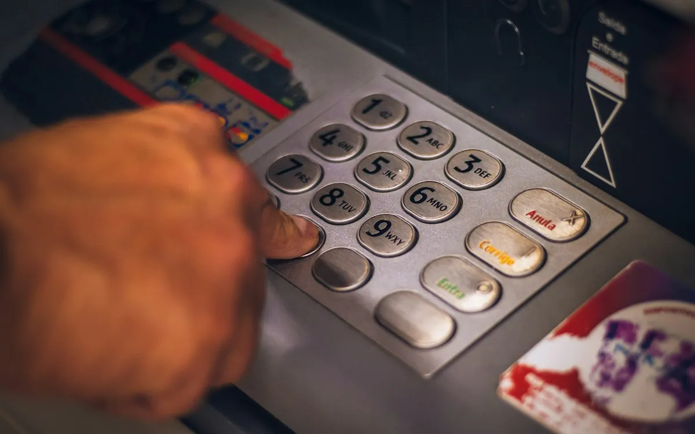

Blog de Taploe.
Noticias y guías prácticas para que más clientes te encuentren, te elijan y te recomienden.
 ⚡ Lo más nuevo
⚡ Lo más nuevoGoogle Maps 2026: las nuevas protecciones contra reseñas falsas y qué significan para tu negocio
Google anunció pausas automáticas de reseñas, revisión con Gemini y alertas visibles para dueños y usuarios. Qué cambió en 2026 y qué debe hacer tu negocio.
 Encuesta de reseñas 2026: 7 datos sobre cómo te eligen tus clientes2 de noviembre de 2026 · 3 min
Encuesta de reseñas 2026: 7 datos sobre cómo te eligen tus clientes2 de noviembre de 2026 · 3 min Búsqueda local con IA: cómo aparecer cuando tus clientes le preguntan a Google y ChatGPT29 de octubre de 2026 · 3 min
Búsqueda local con IA: cómo aparecer cuando tus clientes le preguntan a Google y ChatGPT29 de octubre de 2026 · 3 minTodos los artículos
24 artículosNoticiaGoogle Maps 2026: las nuevas protecciones contra reseñas falsas y qué significan para tu negocio
Google anunció pausas automáticas de reseñas, revisión con Gemini y alertas visibles para dueños y usuarios. Qué cambió en 2026 y qué debe hacer tu negocio.
Buen Fin y diciembre: lo que el Mundial 2026 nos enseñó sobre vender en temporada alta
El Mundial puso a prueba a miles de pymes mexicanas. Las lecciones sobre visibilidad, pagos y reseñas sirven para el Buen Fin y la temporada de fin de año.
NoticiaEncuesta de reseñas 2026: 7 datos sobre cómo te eligen tus clientes
El 97% lee reseñas, la confianza sube y casi la mitad ya pide recomendaciones a la IA. Lo que dice la encuesta de BrightLocal 2026 y cómo aplicarlo en México.
 Reseñas y reputación
Reseñas y reputaciónCómo responder reseñas negativas: 5 pasos y plantillas que sí funcionan
Una mala reseña bien respondida puede generar más confianza que diez buenas. Pasos, ejemplos y errores que debes evitar.
NoticiaBúsqueda local con IA: cómo aparecer cuando tus clientes le preguntan a Google y ChatGPT
AI Mode, Gemini y ChatGPT ya recomiendan negocios. Te explicamos qué información usan, por qué tus reseñas importan más que nunca y qué ajustar hoy.

NoticiaPagos sin contacto en México 2026: NFC, CoDi y DiMo explicados para tu negocio
Los pagos sin contacto crecieron con fuerza y Banxico impulsa CoDi y DiMo. Qué son, cómo usan NFC y QR, y qué significa para tu negocio.
El algoritmo de Instagram en 2026: lo que cambió para los negocios locales
Los mensajes directos pesan más que los “me gusta”, la originalidad se premia y los usuarios pueden ajustar lo que ven. Qué hacer si tienes un negocio local.
WhatsApp Business para negocios en México: guía práctica para vender más
La mayoría de los mexicanos prefiere escribirle a un negocio por WhatsApp. Configura catálogo, respuestas rápidas y etiquetas para atender mejor y vender más.
Reseñas para restaurantes: cómo llenar tu perfil de Google sin incomodar a tus comensales
Cuándo pedir la reseña, dónde colocar la tarjeta, qué decirle al mesero y cómo responder. Guía práctica para restaurantes, cafeterías y bares.
Reseñas para consultorios y clínicas: cómo pedirlas cuidando la privacidad de tus pacientes
Médicos, dentistas, psicólogos y fisioterapeutas: cómo pedir reseñas de forma ética, responder sin revelar datos y construir confianza en Google.
 Reseñas y reputación
Reseñas y reputaciónCómo pedir reseñas por WhatsApp: 6 plantillas listas para copiar
Mensajes cortos y amables para pedir reseñas después de una compra, cita o servicio, sin sonar insistente y respetando las reglas de Google.
Barberías y estéticas: 6 ideas para llenar tu agenda con reseñas y redes
Fotos del antes y después, reseñas en el espejo y citas por WhatsApp. Ideas concretas para barberías, estéticas, uñas y spas.
Reseñas para hoteles, hostales y Airbnb: Google, TripAdvisor y el momento del check-out
Cómo conseguir más opiniones de huéspedes en Google y TripAdvisor, en qué momento pedirlas y cómo responder a viajeros de todo el mundo.
 Google Maps y SEO local
Google Maps y SEO localChecklist 2026 del Perfil de Empresa de Google: 15 puntos para aparecer en el mapa
Categorías, horarios especiales, fotos, servicios, preguntas y reseñas. Revisa tu ficha punto por punto y mejora tu posicionamiento local.
Tarjetas de presentación para equipos de ventas: por qué las digitales cierran más
Imagen uniforme, datos siempre actualizados y contactos que sí se guardan. Cómo usar tarjetas NFC en equipos comerciales e inmobiliarias.
 Noticia
NoticiaApple Business Connect en México: por qué tu negocio también debe estar en Apple Maps
Cada vez más personas usan Apple Maps para elegir negocios. Qué es Apple Business Connect, qué puedes editar y cómo empezar gratis.

Tecnología NFC y QR7 errores comunes con códigos QR en negocios (y cómo evitarlos)
QR que no escanean, enlaces rotos, tamaños mínimos y QR falsos pegados encima. Lo que debes revisar antes de imprimir.
Tiendas de ropa y boutiques: cómo convertir el probador en tu mejor canal de redes
Ideas para boutiques y tiendas de ropa: contenido en el probador, seguidores en caja, reseñas y lanzamientos que llenan la tienda.
10 usos de una tarjeta NFC para tu negocio
10 ideas prácticas para usar tarjetas NFC en tu negocio: reseñas, redes sociales, presentación, equipos de ventas, eventos, menús y más.

Tecnología NFC y QRTarjeta NFC vs código QR: ¿cuál te conviene?
Compara tarjeta NFC y código QR: velocidad, compatibilidad, costo y usos. Descubre cuál conviene a tu negocio o si lo mejor es combinar ambos.
Tarjeta de presentación digital: qué es, ventajas y cómo crearla
Qué es una tarjeta de presentación digital, ventajas frente a la de papel, qué datos incluir y cómo crear la tuya gratis con QR y NFC en México.
¿Qué es una tarjeta NFC y cómo funciona?
Qué es una tarjeta NFC, cómo funciona, con qué celulares es compatible y para qué sirve en negocios y tarjetas de presentación en México.
 Google Maps y SEO local
Google Maps y SEO localCómo obtener el enlace de reseñas de Google de tu negocio
Paso a paso para copiar el enlace directo de reseñas de tu Perfil de Negocio de Google y usarlo en QR, WhatsApp, correo o una tarjeta NFC.
Cómo conseguir más reseñas en Google para tu negocio
Aprende a conseguir más reseñas en Google para tu negocio en México: cuándo pedirlas, cómo facilitar el enlace y cómo usar una tarjeta NFC con QR.
No encontramos artículos con esa búsqueda. Prueba con otra palabra.